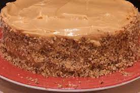

Graham Cracker Cake

Description
Why this isn't as popular as it once was, I will never know.
Ingredients
- 2 cups graham cracker crumbs
- ¾ cup ground pecans
- ½ cup cake flour
- 2 teaspoons baking powder
- ¼ teaspoon salt
- 1 cup unsalted butter, softened
- 1 cup packed light brown sugar
- 3 egg yolks, room temperature
- 2 teaspoons vanilla extract
- 1 cup milk, lukewarm
- 3 egg whites, room temperature
- ¼ cup white sugar
- 2 tablespoons white sugar
- 1 ½ cups unsalted butter, softened
- ½ cup packed dark brown sugar
- ½ cup heavy whipping cream
- ¾ cup confectioners' sugar
- ½ cup chopped pecans
Steps
- Preheat oven to 350 degrees F (175 degrees C). Grease and line with parchment two 9 inch round pans.
- Combine the crumbs, 1/2 cup pecans, flour, baking powder, and salt.
- In a large bowl, cream the butter and the light brown sugar until fluffy. Slowly beat in the egg yolks, one at a time. Stir in the vanilla. Alternately add the milk and the crumb mixture while beating on low.
- Beat the egg whites in a bowl until foamy. Add the sugar slowly, and beat to soft peaks. Fold into the crumb batter, and pour into the pans.
- Bake for 25 minutes, or until a tester comes out clean. Cool in the pans on a rack about 10 minutes, then invert and cool completely.
- To Make Frosting: In a saucepan over medium heat, melt the 2 tablespoon sugar until it turns golden. Remove from heat, and add 4 tablespoons of the butter; swirl. Whisk in the dark brown sugar, and place back on the heat. Bring to a boil, stirring all the time. Add the cream, and bring back to a boil. Boil 1 minute, and remove caramel from heat.
- Place the confectioners' sugar in a large bowl, and mixing on medium speed, slowly drizzle in the caramel. Beat until the bottom of the bowl is just barely warm, about 5 minutes. Add the remaining 1 1/4 cups butter, 1 tablespoon at a time. Beat until smooth, and chill frosting until ready to ice the cake. Frost the cake, and press the pecans into the sides.